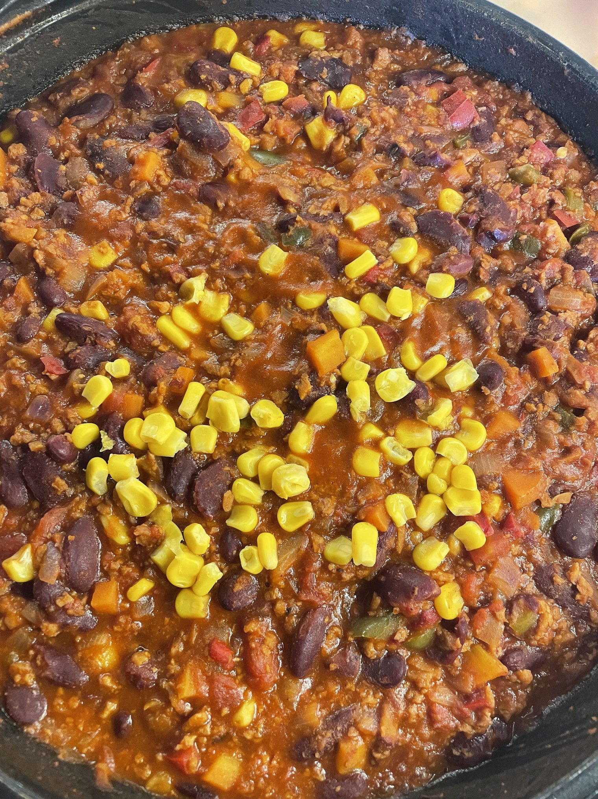

Chile vegano
Ingredientes
×
- 1 cebolla morada
- 0.5 pimiento verde
- 0.5 pimiento rojo
- 1 zanahoria
- chile o cayena
- pimentón
- pimienta
- 2 puñados aprox. de soja texturizada fina
- chorro de vino
- 2 cdas de concentrado de tomate
- 1 lata de tomate en trozos
- 1 bote pequeño (400g aprox.) de alubias rojas
- 2 cdas aprox. de maíz dulce

Preparación
Paso 1
Sofreír las verduras cortadas a cuadraditos chiquitos: 1 cebolla morada, 0.5 pimiento verde, 0.5 pimiento rojo y 1 zanahoria.
Paso 2
Añadir las especias: chile o cayena, pimentón y pimienta.
Paso 3
Poner 2 puñados aprox. de soja texturizada fina que ha estado en remojo y un chorro de vino (opcional).
Paso 4
Añadir 2 cdas de concentrado de tomate, 1 lata de tomate en trozos, 1 bote pequeño (400g aprox.) de alubias rojas, 2 cdas aprox. de maíz dulce y un poco de agua o caldo si es necesario.
Paso 5
Cocinar unos 30min aprox.
Resumen
1 cebolla morada
0.5 pimiento verde
0.5 pimiento rojo
1 zanahoria
Sofreír
chile o cayena
pimentón
pimienta
2 puñados aprox. de soja texturizada fina
chorro de vino
2 cdas de concentrado de tomate
1 lata de tomate en trozos
1 bote pequeño (400g aprox.) de alubias rojas
2 cdas aprox. de maíz dulce
Cocinar